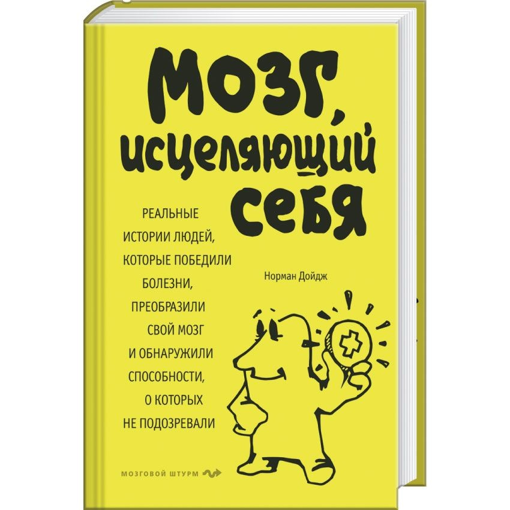

Каталог
Супер счет для супермозга. Новая методика Рюта Кавашима по развитию мозга
Автор: Дойдж Н.
Серия: Психология. Мозговой штурм
Год издания: 2019
Издательство: Эксмо
Человеческий мозг способен исцелять себя сам! Известный американский психиатр Норман Дойдж на конкретных примерах из собственной практики докажет вам это! Абсолютному большинству пациентов, которых доктор Дойдж описывает в книге, ставили безнадежные диагнозы: рассеянный склероз, аутизм, инсульт, болезнь Паркинсона, дислекия... Но они выздоравливали! Узнайте, как!Автор рассказывает об уникальном методе восстановления мозга – нейропластической терапии – и дает практические рекомендации по самоисцелению!
Цена: 599 р.